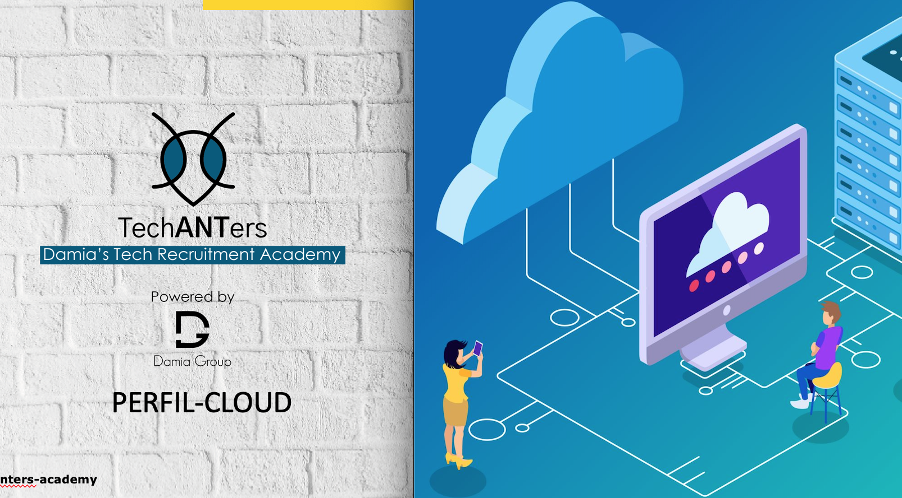

TechANTers
Thank You Damia!
Quero antes de mais agradecer á Damia e a quem esteve por detrás desta iniciativa e na criação desta academia! Um projeto novo que nasceu neste mundo pós pandémico com o intuito de ajudar/formar as pessoas na área de recrutamento de IT. Uma área com grande crescimento e esta formação é sem dúvida uma grande oportunidade de conhecimento. Um obrigado pela oportunidade que me foi dada, não me arrependo de ter aceitado este desafio!
Um obrigado a todos os formadores! Sabendo que além dos seus trabalhos ainda foram professores de part-time souberam dividir o tempo entre trabalhar, ter uma vida pessoal, ensinar, preparar apresentações e avaliar trabalhos para uma turma pequena, mas forte! Foram ótimos a transmitir toda a informação, experiência e exemplos que foram dados em aulas e por isso um OBRIGADO.
Um obrigado á primeira turma da Academia! Foi uma turma unida, sempre bem-dispostos e prontos aprender. Sei também que foi mais difícil para alguns saber lidar com trabalho, vida pessoal, e ainda estar com atenção á academia, fazer e entregar os trabalhos e atividades nas horas marcadas não é fácil. Mas o certo é que num piscar de olhos já passaram as 7 semanas de formação e todos acabaram com um sorriso e de certeza com satisfação em terem concluído. Por isso da minha parte um OBRIGADO por terem sido meus colegas!
Resumo das Atividades
 Curriculo GitHub: Primeiro módulo da academia e para mim um dos mais interessantes, tendo em conta que eu gosto muito de tudo o que tenha haver com tecnologia. Aprender os princípios básicos de programação e de código foi útil e acredito que aprendemos só 1% ou os básicos dos básicos porque este mundo é enorme. Dentro disto a atividade foi fazer um Curriculo Online utilizando o GitHub. Eu fiz uma procura pelo google e então encontrei uma página com alguns templates (https://html5up.net/) no qual encontrei um que gostei e achei otimo para ser um Cv. Fiz download e abri com o Visual Studio Code, logo ai tive o meu primeiro contato com um código completo. Fascinante! Um conjunto de números e letras que todos tem um propósito. Com muitos tutoriais no Youtube e muita tentativa erro lá consegui concluir todos os pontos que queria meter no Cv. Proximo passo foi fazer um repositório no GitHub e fazer o input do código para lá, quando tudo estava ótimo e a correr bem foi altura de fazer o teste final e aceder ao link e sentir que estava tudo a correr bem!
Curriculo GitHub: Primeiro módulo da academia e para mim um dos mais interessantes, tendo em conta que eu gosto muito de tudo o que tenha haver com tecnologia. Aprender os princípios básicos de programação e de código foi útil e acredito que aprendemos só 1% ou os básicos dos básicos porque este mundo é enorme. Dentro disto a atividade foi fazer um Curriculo Online utilizando o GitHub. Eu fiz uma procura pelo google e então encontrei uma página com alguns templates (https://html5up.net/) no qual encontrei um que gostei e achei otimo para ser um Cv. Fiz download e abri com o Visual Studio Code, logo ai tive o meu primeiro contato com um código completo. Fascinante! Um conjunto de números e letras que todos tem um propósito. Com muitos tutoriais no Youtube e muita tentativa erro lá consegui concluir todos os pontos que queria meter no Cv. Proximo passo foi fazer um repositório no GitHub e fazer o input do código para lá, quando tudo estava ótimo e a correr bem foi altura de fazer o teste final e aceder ao link e sentir que estava tudo a correr bem!
Perfis Cloud: Neste módulo foi apresentado os diferentes perfis de IT, e a atividade constituía em criar uma apresentação sobre os perfis de Cloud. Fiz uma pesquisa no Google e encontrei algumas informações, comecei por criar um Power Point em que escolhi abordar 3 perfis: Cloud Engineer, Cloud Architec, Cloud Security Engineer. Procurei e estudei quais as principais responsabilidades de cada um, como as tecnologias utilizadas. No fim de cada apresentação meti algumas questões que podem ser colocadas em contexto de entrevista a cada um destes perfis.
 Modelos de Negócio: O módulo 3 foi uma introdução aos diferentes modelos de negócios, temos o PERM, RPO e Outsourcing. Nesta atividade pediram para criar uma reflexão pessoal sobre os modelos, dizer as principais semelhanças, vantagens/desvantagens entre outros tópicos. Fiz uma apresentação Power Point em que fiz um breve resumo de cada modelo (uma definição resumida), seguido de vantagens e desvantagens de cada um. No final disse qual a modalidade de negócio que gostava de vir a experimentar no futuro. Escolhi o PERM, acho que ia ser o modelo no qual me identifico mais, sendo RPO o a seguir. Gosto do desafio de encontrar o melhor candidato adequado ao perfil do cliente, a pesquisa árdua e non-stop para alcançar, penso que seja algo que me vai motivar!
Modelos de Negócio: O módulo 3 foi uma introdução aos diferentes modelos de negócios, temos o PERM, RPO e Outsourcing. Nesta atividade pediram para criar uma reflexão pessoal sobre os modelos, dizer as principais semelhanças, vantagens/desvantagens entre outros tópicos. Fiz uma apresentação Power Point em que fiz um breve resumo de cada modelo (uma definição resumida), seguido de vantagens e desvantagens de cada um. No final disse qual a modalidade de negócio que gostava de vir a experimentar no futuro. Escolhi o PERM, acho que ia ser o modelo no qual me identifico mais, sendo RPO o a seguir. Gosto do desafio de encontrar o melhor candidato adequado ao perfil do cliente, a pesquisa árdua e non-stop para alcançar, penso que seja algo que me vai motivar!
Mensagem para o Candidato: A atividade do modulo 4 foi encontrar um job description ao nosso gosto no site da Damia ou da META e procurar no Linkedin um candidato que faça fit com a oportunidade em questão e escrever uma mensagem de Linkedin de como abordaria o candidato. Escolhi ir ao site da Damia e procurar por um JD, encontrei uma para um Backend na MotorK. Rapidamente fui meter as mãos na massa! Ao fazer o meu Sourcing encontrei um candidato que fazia fit com a JD sendo uma das principais skills era PHP. Criei a minha mensagem (atenção que foi a primeira vez que desenvolvi uma mensagem para um candidato...) com base do que aprendi no modulo e dos exemplos que foram dados. Anexei também o link da JD e do Linkedin do candidato.
 Guião Entrevista: Chegamos ao módulo 5, das entrevistas. Aqui a nossa atividade era criar um guião de entrevista com as questões que considerava serem essenciais na entrevista de um candidato, trata-se de um guião generalista, onde deve constar questões que colocaria independentemente do perfil que tenham. Comecei por dizer que fazia uma pequena apresentação sobre mim e depois uma introdução sobre o projeto/empresa/vaga para a qual estava a recrutar e dai fiz uma lista com cerca de 12 perguntas que achei serem essenciais. Exemplo: Descreve o teu percurso profissional; Como lidarias com uma situação em que a tua equipa não concorda com uma nova ideia que tu sugeriste; O que gostas de fazer nos tempos livres, entre outras.
Guião Entrevista: Chegamos ao módulo 5, das entrevistas. Aqui a nossa atividade era criar um guião de entrevista com as questões que considerava serem essenciais na entrevista de um candidato, trata-se de um guião generalista, onde deve constar questões que colocaria independentemente do perfil que tenham. Comecei por dizer que fazia uma pequena apresentação sobre mim e depois uma introdução sobre o projeto/empresa/vaga para a qual estava a recrutar e dai fiz uma lista com cerca de 12 perguntas que achei serem essenciais. Exemplo: Descreve o teu percurso profissional; Como lidarias com uma situação em que a tua equipa não concorda com uma nova ideia que tu sugeriste; O que gostas de fazer nos tempos livres, entre outras.
Reflexão de Sourcing: Com o módulo 6 chegamos ao Sourcing! Foi um dos módulos que gostei mais de aprender porque aprendemos ou tivemos o “contato físico” com a pesquisa necessária para encontrar os melhores candidatos para o recrutamento. A atividade era para fazer uma reflexão sobre o Sourcing, e sobre as diferentes plataformas existentes onde podemos encontrar e abordar os candidatos e as vantagens/ desvantagens de cada uma delas. No final foi criar um boolean que usaria no Google com base no que foi ensinado em aula. Fiz um ficheiro Word onde coloquei as principais plataformas (Linkedin, Facebook, Instagram, Github, Reddit, Twitter, etc...) e falei sobre o que na minha opinião seriam as top 3 para um tech recruiter: Linkedin, Facebook e Github. O meu boolean de acordo com as caraterísticas que nos foram apresentadas foi o seguinte: "Frontend" OR "front-end" OR "front end" "Braga" AND "Angular" OR "React" OR "Vue" AND "AWS" OR "Azule" OR "GCP" -intitle:"profiles" -inurl:"dir/ " site:pt.linkedin.com/in/ OR site:pt.linkedin.com/pub/
 3 Tópicos para posts: A atividade do módulo 7 foi escolher 3 tópicos na área do recrutamento para fazer publicações nas nossas redes sociais, ou seja, trabalhar o nosso personal branding. Fiz a atividade em power point e procurei fazer em inglês pela simples razão se fosse para as redes sociais tinha uma maior abertura. E os post foram os seguintes: Remote Work VS Hybrid Workplace VS Return to Office. Nesta publicação fiz uma introdução á vida profissional depois de uma pandemia, em que é um tema bastante debatido. Coloquei também um link de um blog que mostra as diferenças entes ambos e os highlitghs de cada um. Segundo Post: Which is better: DEVOPS or SER. Outro tema que surge bastante na internet e que causa duvida na área, encontrei um vídeo que foi feito pela Google que explica as diferenças e também as semelhanças. Terceiro Post: Java & Javascript, havendo duas linguagens com um nome parecido pode confundir, dai criar este post com o intuito de explicar as diferenças, fazendo referencia a um artigo publicado pelo WildCodeSchool.
3 Tópicos para posts: A atividade do módulo 7 foi escolher 3 tópicos na área do recrutamento para fazer publicações nas nossas redes sociais, ou seja, trabalhar o nosso personal branding. Fiz a atividade em power point e procurei fazer em inglês pela simples razão se fosse para as redes sociais tinha uma maior abertura. E os post foram os seguintes: Remote Work VS Hybrid Workplace VS Return to Office. Nesta publicação fiz uma introdução á vida profissional depois de uma pandemia, em que é um tema bastante debatido. Coloquei também um link de um blog que mostra as diferenças entes ambos e os highlitghs de cada um. Segundo Post: Which is better: DEVOPS or SER. Outro tema que surge bastante na internet e que causa duvida na área, encontrei um vídeo que foi feito pela Google que explica as diferenças e também as semelhanças. Terceiro Post: Java & Javascript, havendo duas linguagens com um nome parecido pode confundir, dai criar este post com o intuito de explicar as diferenças, fazendo referencia a um artigo publicado pelo WildCodeSchool.
 Situações de Negociação: Atividade do módulo 8 era baseado na negociação. Temos 2 situações no qual temos que mostrar as nossas skills de negociadores. Tínhamos uma situação em que o cliente analisa o candidato e o valor da rate é superior á média de mercado relativamente ao perfil. Disse que abordava esta situação sempre com uma comunicação assertiva/passiva mantendo sempre o respeito e procurar soluções que beneficiam ambos os lados. Dei 4 exemplos de como negociava a situação. Relativamente á segunda situação era imaginar que não se conseguia chegar a um acordo com o cliente. Surgeri que para não existir um conflito com o cliente podíamos ter que abandonar a negociação e com o candidato era encontrar outra solução, neste caso um outro projeto.
Situações de Negociação: Atividade do módulo 8 era baseado na negociação. Temos 2 situações no qual temos que mostrar as nossas skills de negociadores. Tínhamos uma situação em que o cliente analisa o candidato e o valor da rate é superior á média de mercado relativamente ao perfil. Disse que abordava esta situação sempre com uma comunicação assertiva/passiva mantendo sempre o respeito e procurar soluções que beneficiam ambos os lados. Dei 4 exemplos de como negociava a situação. Relativamente á segunda situação era imaginar que não se conseguia chegar a um acordo com o cliente. Surgeri que para não existir um conflito com o cliente podíamos ter que abandonar a negociação e com o candidato era encontrar outra solução, neste caso um outro projeto.
 Resolução de Conflitos: Módulo 9 sendo o último da academia acho que foi a atividade mais difícil para mim. A atividade era descrever 3 possíveis situações difíceis que poderíamos ter de enfrentar no papel de tech recruiter. Desenvolvi uma estratégia de resolução com base nas técnicas aprendidas em inteligência emocional, gestão de conflitos e linguagem corporal. Primeira Situação: Ter uma entrevista marcada e o candidato desmarcar 10 minutos antes. Dei ênfase aos nossos sentimentos de frustração e de desilusão e de aceitar a negação, desenvolver a nossa motivação seria uma solução. Segunda Situação: Lidar com candidatos que apresentam comportamentos de superioridade durante a entrevista. Abordei que nesta situação devíamos manter uma postura dominante, mas não desafiadora, alem de um sorriso e um olhar direto nos olhos. São elementos que podia contornar a situação. Terceira Situação: Lidar com fatores externos ao nosso processo de recrutamento sobre os quais não temos controlo. Nesta situação devemos trabalhar o nosso controlo emocional, controlar os nossos impulsos e lidar com os sentimentos negativos. Um diálogo interno e técnicas de relaxamento seria a solução.
Resolução de Conflitos: Módulo 9 sendo o último da academia acho que foi a atividade mais difícil para mim. A atividade era descrever 3 possíveis situações difíceis que poderíamos ter de enfrentar no papel de tech recruiter. Desenvolvi uma estratégia de resolução com base nas técnicas aprendidas em inteligência emocional, gestão de conflitos e linguagem corporal. Primeira Situação: Ter uma entrevista marcada e o candidato desmarcar 10 minutos antes. Dei ênfase aos nossos sentimentos de frustração e de desilusão e de aceitar a negação, desenvolver a nossa motivação seria uma solução. Segunda Situação: Lidar com candidatos que apresentam comportamentos de superioridade durante a entrevista. Abordei que nesta situação devíamos manter uma postura dominante, mas não desafiadora, alem de um sorriso e um olhar direto nos olhos. São elementos que podia contornar a situação. Terceira Situação: Lidar com fatores externos ao nosso processo de recrutamento sobre os quais não temos controlo. Nesta situação devemos trabalhar o nosso controlo emocional, controlar os nossos impulsos e lidar com os sentimentos negativos. Um diálogo interno e técnicas de relaxamento seria a solução.